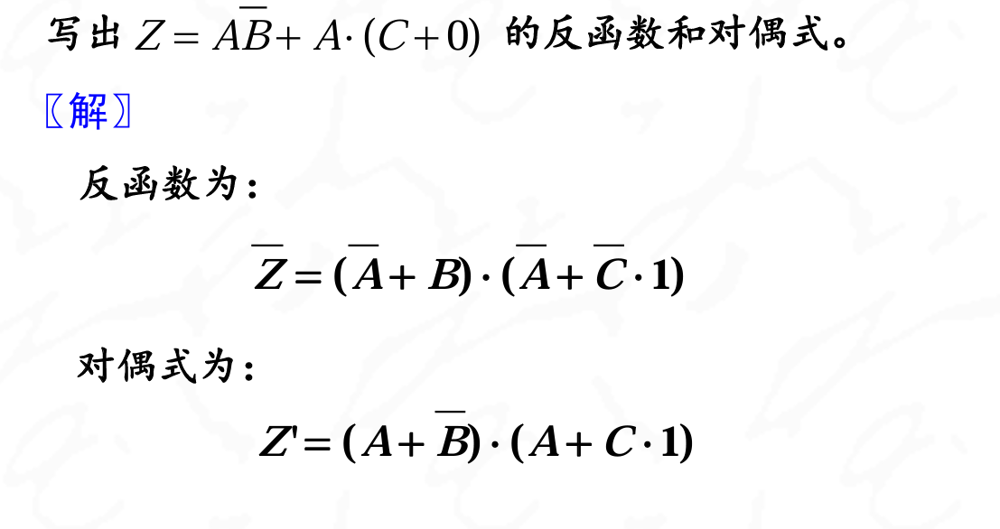
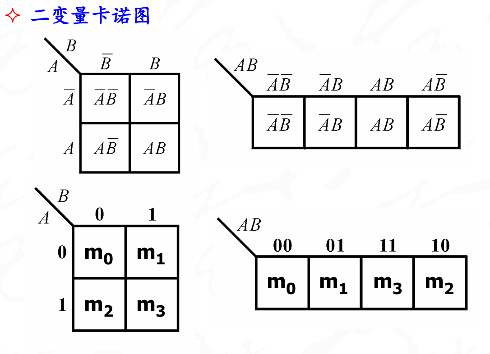

逻辑基础
约 1967 个字 20 张图片 预计阅读时间 7 分钟
基本概念
数值离散化
模拟信号通过分段量化,转换成离散信号或者数字信号就是数值的离散化. 在数字电路中就是二进制处理
高电平代表1,低电平代表0
数字电路中的数值和转换
- 二进制数值: 0,1
- 十进制数值: 0,1,2,3,4,5,6,7,8,9
- r进制:
- r进制数的基数有r个
- 第i位的权值是\(r^{i-1}\)
- 进位规则是逢r进1
二进制B,八进制O,十六进制H,十进制D
十进制转化成r进制的方法
- 整数除以r取余数,余数作为该位的值
- 小数部分乘上r取整数
负数的编码表示
在数字电路中用符号位表示数字的正负,此时有0表示正,1表示负.
原正负数成为真值
用机器数表示真值我们就需要了解三种编码
- 原码:用于乘法
- 反码
- 如果是正数:反码就是符号位加上原数值
- 如果是负数:符号位为1,其他位取反
- 补码
- 如果是正数:补码就是原数值
- 如果是负数:符号位为1,其他位取反,最后加1
Note
负数的补码等于反码+1
落实到具体的计算中如下
数字电路中的几种编码
BCD码:常见的分有权码和无权码.有权码按照每一位的权重命名, 有8421有权码,5421有权码,2321有权码
无权码则叫余三码,余一码等:余三码的意思就是 该数字转化为二进制数之后-3得到原数字. 例如0011表示原数字就是0000

格雷循环码:任何两组相邻代码之间只相差一位码不同.避免 了由于多位同时变化导致的错误
基本功能电路
逻辑代数的三种基本运算:与,或,非.(AND,OR,NOT)

逻辑代数还有几种符合逻辑关系
与非(NAND) 或非(NOR) 异或(XOR) 与或非

异或: \(\(L=A\overline{B}+B\overline{A}\)\)
记忆逻辑功能电路
上述各种逻辑电路中，只存在从输入到输出的信号联系（开环连接），所以属于组合电路。 当电路中存在由输出反馈到输入的通路时，逻辑 电路构成了闭环连接，为时序逻辑电路。最简单的一种闭环连接方式是由两个串联的反相器构成封闭回路，称为锁存器，也称触发器
逻辑代数
又称布尔代数,就是布尔值的一些运算
基本运算定理
重点掌握逻辑函数简化的方法


重点关注分配律和摩根定理
- 分配律
因为(A+B+C)A=A.意思是当A为真时,括号内也为真,A为假时,括号内也为假,所以可以消除括号内的变量.
- 摩根定理
注意拆掉上面的非的时候,下面时间不变,与变或,或变与
-
常用公式
- 吸收变量: \(A+AB=A\)
- 提取变量: \(AB+\overline{A}B=B\)
- 消去多余因子:\(A+\overline{A}B=A+B\)
- 消除BC冗余项:\(AB+\overline{A}C+BC=AB+\overline{A}C\)
运算规则
- 代入规则: 在一个含有变量A的逻辑等式中，如果用另一个逻辑函数F去代替所有的变量，则等式仍然成立
- 对偶规则
将一个逻辑表达式中的F的0替换成1,1替换成0,与非再对调一下,变换之后的表达式成为F的对偶式,记作F'.
- 若两个逻辑表达式相等，则它们的对偶式也一定相等
- 对偶式再求一次对偶，则得到原函数
- 反演规则
将一个逻辑函数中的“0”换为“1”，“1”换为“0”，“·” 换为“+”，“+”换为“·”，原变量换成反变量，反变量换成原变量，则变换后的函数是原函数的反函数
- 反演规则：若两个逻辑表达式相等，则它们的反演式也一定相等
- 对反函数再求一次反演，则为原函数
对偶式是只把已经出现的0和1对调,而反演式是把所有的变量都换成了反的

写反函数的时候可以不管顶上的取反,只需要把变量取反++和·互换就能得到正确的答案
逻辑问题的表达方式:
- 真值表
- 逻辑表达式 逻辑函数式的标准表达式:为标准与-或表达式,也称最小项之和表达式
- 波形图
- 卡诺图
- 逻辑图
Note
标准与-或表达式的每个与项都是最小项。最小项具有如下特征: 1. 每个与项都包含了函数的所有变量A,B,C 2. 所有变量都以原变量或者以反变量的形式出现且,仅出现一次。
最小项的表示:
最小项的下标表示,当函数f(A,B,…)具有n个变量时，则这个函数应有2n个最小项,最小项常用m加下标来表示，原变量用“1”、反变量用“0”赋值，则最小项用相应的下标表示
例如:

最小项的性质
- 输入变量的任何一组取值i,只有一个最小项mi的值为1,其他最小项的值都为0
- 任何两个最小项相与，结果一定为0
- 全部最小项的和，结果为1。
最大项之积表达式:
最小项标准表达式求反得到的反函数就是标准或-与表达式,也称为最大项之积表达 式,每个或项都是最大项.
- 每个或项都包含了函数的所有变量A,B,C
- 所有变量都以原变量或者以反变量的形式出现且仅出现一次
例题
将以下逻辑函数化为最小项之和式(标准与-或表达式)和最大项之积形式(标准或-与表达式) \(\(L=f(A,B,C)=AB+\overline{A}\overline{B}\overline{C}\)\)
解答

逻辑函数化简
所谓最简的与或表达式，是指组成的逻辑电路最简（门数和每门的输入端数最少）。具体为
- 表达式中的与项项数最少；
- 每个与项中的变量数也最少
常用公式:
例题1:注意消去变量法的使用

例题2:配项法

! \(\(\overline{A}\overline{B}\overline{C} \neq \overline{ABC}\)\)
代数法化简需要一定的技巧以及对逻辑代数的熟练应用，无固定步骤可遵循，具有一定的试探性。对最后的化简结果，有时难以肯定是合理的。
卡诺图化简

用卡诺图表示逻辑函数:
略,考后来填坑
将逻辑函数化为最简与或表达式、最简与非-与非表达式、最简或与表达式、最简或非-或非表达式、最简与或非表达式。
- 包围1,得到与或表达式
- 反演-包围1,得到与非-与非表达式
- 包围0得到反函数的与或表达式,在反演得到最简的或与表达式
- 再反演,得到或非-或非表达式
- 最简与或非表达式则是通过或非-或非写出来的
卡诺图到表达式
包围卡诺图中“1”的小方块,得到原函数的最简与-或表达式,进而反演可得到最简的与非-与非表达式.包围卡诺图中“0”的相邻小方块,得到最简的或与表达式,进而可得到最简的或非-或非表达式及与或非表达式.
充分利用约束项!